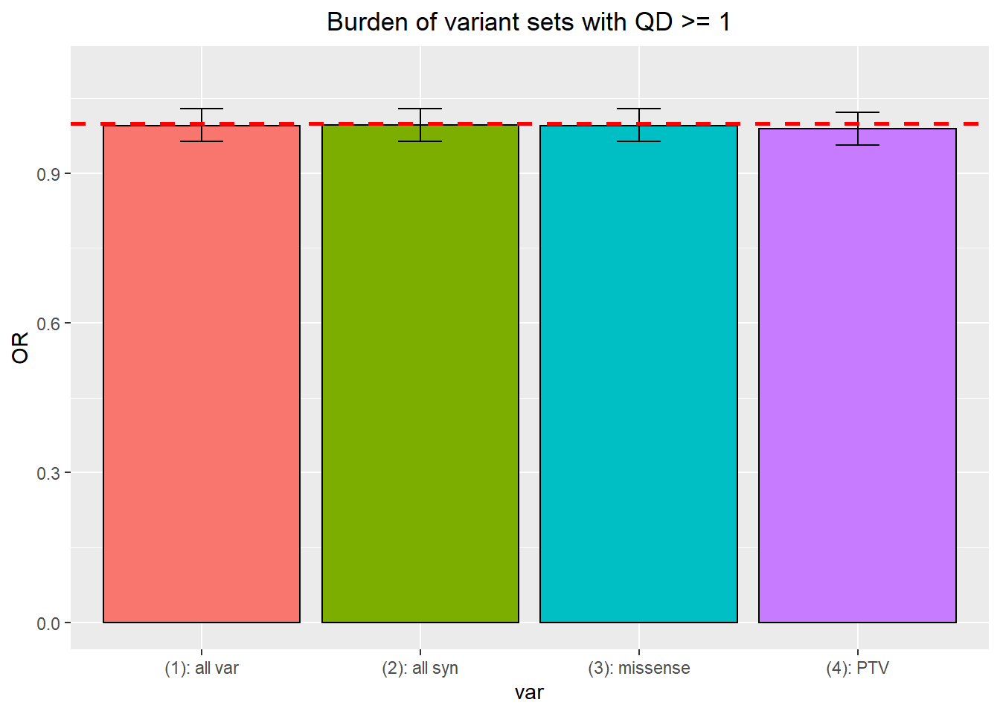
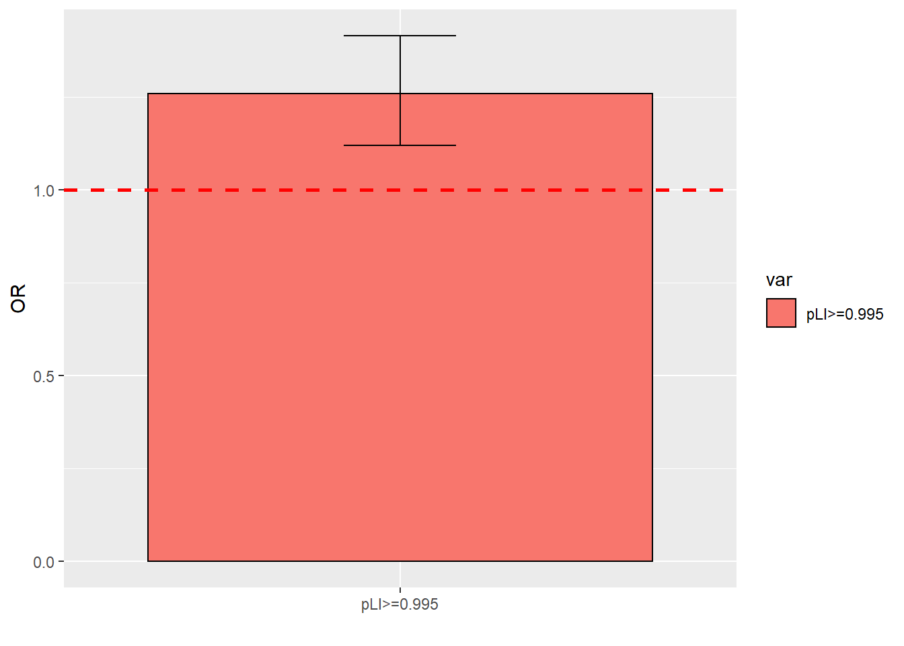
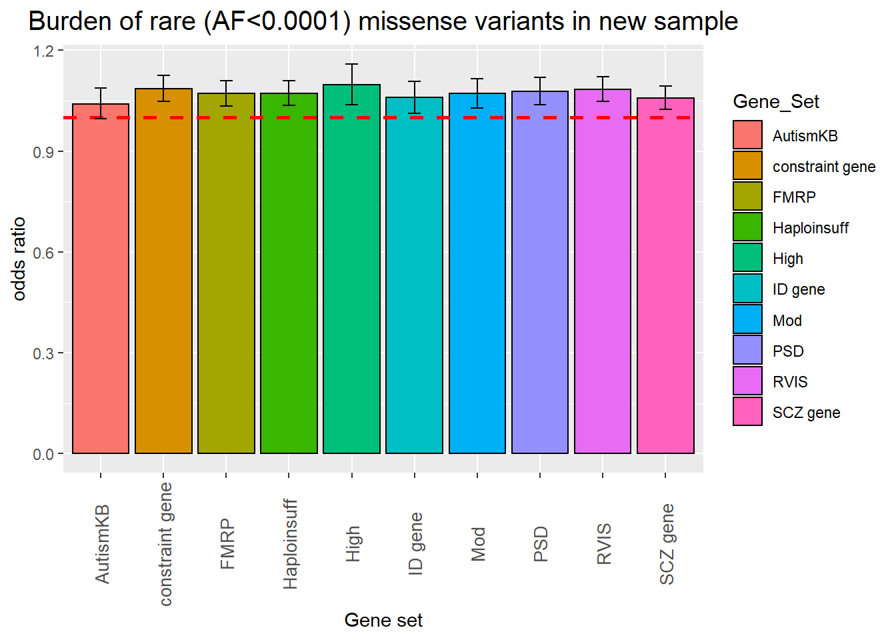
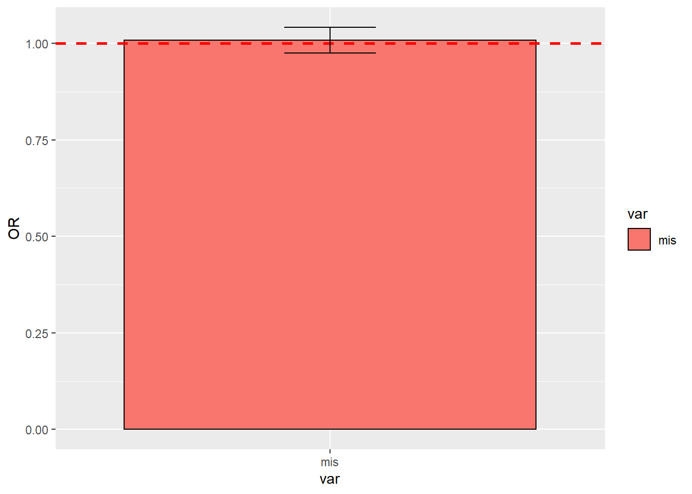
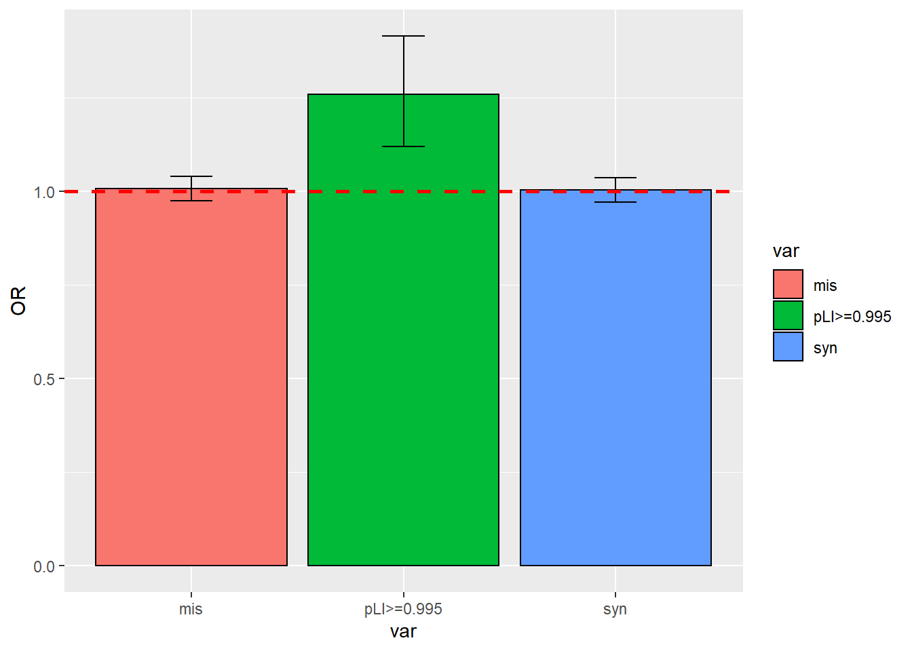
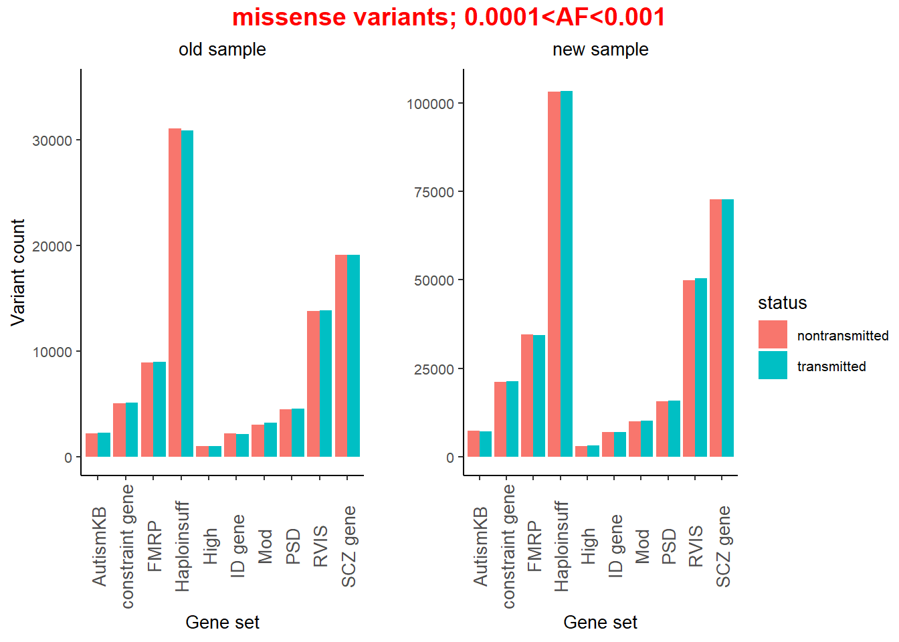

Variant set (VS) analysis
Allele frequency: old sample vs new sample

- for both samples, focus on variants with AF<5% and exclude syn mutations.
- each point is one locus
- left panel: 344 (0.0188%) overlapping loci with numeric AF from both
old and new sample; one example is
7:100683050 0.042 (AF_old) 0.0000816(AF_new), in Gnomad database, V2 say AF is4.05e-2, ExAC AF is4.22e-2, and v3 (hg38) AF is3.28e-5. This example suggestsGnomad_non_neuro_AFis close to genomewide AF under hg38.
> ASC_new_sample %>% filter(Variant=="7:100683050:G:A") %>% select(Variant, Gene, pLI, Consequence, Gnomad_non_neuro_AF)
# A tibble: 1 x 5
Variant Gene pLI Consequence Gnomad_non_neuro_AF
<chr> <chr> <dbl> <chr> <dbl>
1 7:100683050:G:A GIGYF1 0.979 missense_variant 0.0000816> Anno.Data %>%
+ filter(str_detect(ID, '7:100683050')) %>% select(ID, Gene, ExacAF)
# A tibble: 1 x 3
ID Gene ExacAF
<chr> <chr> <dbl>
1 7:100683050-100683050_T_G MUC17 0.042right panel: 1826590 loci with
NAAF replaced with 2 either from new or old samplein the two figures in the bottom, old samples are liftover, a larger number of loci (289,157, 18.80%, 289,157/1,537,827) are overlapping between new sample and liftover sample of old data.
Burden analysis for new sample
All rare variants
- AF filter
Gnomad_non_neuro_AF<0.05 - syn:
isSyn==T - missense:
isMis==T - PTV:
isPTV==T - sample size should be 7291
- Other filter
isIndel=="FALSE" & QD >= 1 & AS_SOR <= 3 & AS_ReadPosRankSum >= -0.8
## Trans Untrans
## (1): all var 13474254 13522697
## (2): all syn 5124473 5143323
## (3): missense 6209845 6236366
## (4): PTV 176179 178190- AF filter
Gnomad_non_neuro_AF<0.05 - syn:
isSyn==T - missense:
isSyn==T - PTV:
isPTV==T - sample size should be 7291
- Other filter
isIndel=="FALSE" & QD >= 10.5 & AS_SOR <= 3 & AS_ReadPosRankSum >= -0.8
## Trans Untrans
## (1): all var 13152940 13089824
## (2): all syn 5027525 5013752
## (3): missense 6039210 6004977
## (4): PTV 169567 168700- AF filter
Gnomad_non_neuro_AF<0.05 - syn:
isSyn==T - missense:
isMis==T - PTV:
isPTV==T - sample size should be 7291
- Other filter
isIndel=="FALSE" & QD >= 6 & AS_SOR <= 3 & AS_ReadPosRankSum >= -0.8
## Trans Untrans
## (1): all var 13152940 13089824
## (2): all syn 5027525 5013752
## (3): missense 6039210 6004977
## (4): PTV 169567 168700
- AF filter
Gnomad_non_neuro_AF<0.05 - syn:
isSyn==T - missense:
isMis==T - PTV:
isPTV==T - sample size should be 7291
- Other filter
isIndel=="FALSE" & QD >= 10 & AS_SOR <= 3 & AS_ReadPosRankSum >= -0.8
## Trans Untrans
## (1): all var 13152940 13089824
## (2): all syn 5027525 5013752
## (3): missense 6039210 6004977
## (4): PTV 169567 168700
Figure 1(B) in cell paper
From cell paper, for variants with pLI>=0.995, there
are 695 transmitted variants and 557 untransmitted in 5869 parents,
i.e. 0.12/0.1 variants per sample, leading to 1.2 fold enrichment.
pLI>=0.995Gnomad_non_neuro_AF<0.001isPTV=="TRUE"isIndel=="FALSE" & QD >= 10 & AS_SOR <= 3 & AS_ReadPosRankSum >= -0.8
with above filters, 714 transmitted variants vs 567 untransmitted
Old sample vs new sample
Missense variants in different gene set
To compare old sample and new sample, look at missense variant with AF<1E-4 in 10 gene sets
- In old sample: missense: Non-LoF variants
for new sample, use filter
isMis==TRUEGnomad_non_neuro_AF<0.0001QD>=10 & AS_SOR <=3 & AS_ReadPosRankSum>-0.8
Variant counts comparison


Gnomad_non_neuro_AF<0.05- missense variants:
isMis=="TRUE" - use filter
QD>=10 & AS_SOR <=3 & AS_ReadPosRankSum>-0.8


\(10^{-4}< AF<10^{-3}\)

Missense variants in individual constraint gene
consider missense variants with AF<10-E4 in top 10 genes from old sample and new sample and see how they compare

variant count of top 10 genes in old sample

Gnomad_non_neuro_AF<0.05- exclude syn variants
isSyn=="FALSE" - filter introns
!str_detect(Consequence, 'intron_variant' - new sample
isIndel=="FALSE" & QD >= 10 & AS_SOR <= 3 & AS_ReadPosRankSum >= -0.8
Gene-CYFIP1
Gnomad_non_neuro_AF<0.05- exclude synonymous variants
isSyn==F - filter out introns
!str_detect(Consequence, 'intron_variant')
| Variant | Chrom | Gene | Consequence | Gnomad_non_neuro_AF | Transmitted_proband | Untransmitted_proband |
|---|---|---|---|---|---|---|
| 15:22870039:C:T | 15 | CYFIP1 | missense_variant | 0 | 0 | 1 |
| 15:22870072:G:A | 15 | CYFIP1 | missense_variant | 0 | 1 | 0 |
| 15:22870087:G:A | 15 | CYFIP1 | missense_variant | 0 | 0 | 1 |
| 15:22870092:C:T | 15 | CYFIP1 | missense_variant | 0 | 1 | 0 |
| 15:22870093:C:T | 15 | CYFIP1 | missense_variant | 0 | 1 | 0 |
| 15:22870099:C:T | 15 | CYFIP1 | missense_variant | 0 | 1 | 0 |
| 15:22870102:C:T | 15 | CYFIP1 | missense_variant | 0 | 0 | 1 |
| 15:22870114:G:C | 15 | CYFIP1 | missense_variant | 0 | 0 | 1 |
| 15:22870132:T:C | 15 | CYFIP1 | missense_variant | 0 | 0 | 1 |
| 15:22870164:C:T | 15 | CYFIP1 | missense_variant | 0 | 1 | 0 |
| 15:22870180:T:C | 15 | CYFIP1 | missense_variant | 0 | 0 | 1 |
| 15:22870182:T:A | 15 | CYFIP1 | missense_variant | 0 | 0 | 1 |
| 15:22872840:C:G | 15 | CYFIP1 | missense_variant | 0 | 1 | 0 |
| 15:22872869:T:C | 15 | CYFIP1 | missense_variant | 0 | 1 | 5 |
| 15:22872905:G:A | 15 | CYFIP1 | missense_variant | 0 | 1 | 0 |
| 15:22872917:C:G | 15 | CYFIP1 | missense_variant | 0 | 2 | 1 |
| 15:22872919:A:G | 15 | CYFIP1 | missense_variant | 0 | 0 | 1 |
| 15:22872970:T:A | 15 | CYFIP1 | missense_variant,splice_region_variant | 0 | 2 | 2 |
| 15:22873527:T:C | 15 | CYFIP1 | missense_variant | 0 | 0 | 1 |
| 15:22873611:C:T | 15 | CYFIP1 | missense_variant | 0 | 0 | 1 |
| 15:22873612:G:A | 15 | CYFIP1 | missense_variant | 0 | 1 | 0 |
| 15:22873638:C:A | 15 | CYFIP1 | missense_variant | 0 | 1 | 2 |
| 15:22873638:C:T | 15 | CYFIP1 | missense_variant | 0 | 1 | 0 |
| 15:22873645:G:A | 15 | CYFIP1 | missense_variant | 0 | 0 | 1 |
| 15:22873665:A:G | 15 | CYFIP1 | missense_variant | 0 | 0 | 1 |
| 15:22874593:G:A | 15 | CYFIP1 | missense_variant | 0 | 1 | 3 |
| 15:22874597:C:T | 15 | CYFIP1 | missense_variant | 0 | 0 | 1 |
| 15:22875270:G:C | 15 | CYFIP1 | missense_variant,splice_region_variant | 0 | 1 | 0 |
| 15:22881867:G:A | 15 | CYFIP1 | missense_variant | 0 | 0 | 1 |
| 15:22881900:T:C | 15 | CYFIP1 | missense_variant | 0 | 1 | 1 |
| 15:22881911:A:C | 15 | CYFIP1 | missense_variant | 0 | 0 | 1 |
| 15:22881912:C:T | 15 | CYFIP1 | missense_variant | 0 | 1 | 1 |
| 15:22882878:A:G | 15 | CYFIP1 | missense_variant | 0 | 2 | 2 |
| 15:22882932:C:T | 15 | CYFIP1 | missense_variant | 0 | 1 | 0 |
| 15:22882945:G:C | 15 | CYFIP1 | missense_variant | 0 | 1 | 0 |
| 15:22903719:C:T | 15 | CYFIP1 | missense_variant | 0 | 3 | 4 |
| 15:22903818:G:A | 15 | CYFIP1 | missense_variant | 0 | 0 | 1 |
| 15:22903823:A:G | 15 | CYFIP1 | missense_variant | 0 | 0 | 2 |
| 15:22903827:C:T | 15 | CYFIP1 | missense_variant | 0 | 0 | 1 |
| 15:22903830:C:T | 15 | CYFIP1 | missense_variant | 0 | 2 | 3 |
| 15:22903835:C:T | 15 | CYFIP1 | missense_variant | 0 | 4 | 5 |
| 15:22903853:C:T | 15 | CYFIP1 | missense_variant | 0 | 3 | 0 |
| 15:22909199:T:C | 15 | CYFIP1 | missense_variant | 0 | 73 | 83 |
| 15:22909254:C:T | 15 | CYFIP1 | missense_variant | 0 | 1 | 0 |
| 15:22909255:A:G | 15 | CYFIP1 | missense_variant | 0 | 1 | 0 |
| 15:22909297:A:G | 15 | CYFIP1 | missense_variant | 0 | 0 | 1 |
| 15:22909307:C:T | 15 | CYFIP1 | missense_variant | 0 | 0 | 1 |
| 15:22910533:T:C | 15 | CYFIP1 | missense_variant | 0 | 0 | 1 |
| 15:22910545:G:A | 15 | CYFIP1 | missense_variant | 0 | 1 | 0 |
| 15:22910563:G:A | 15 | CYFIP1 | missense_variant | 0 | 2 | 0 |
| 15:22910581:G:A | 15 | CYFIP1 | missense_variant | 0 | 2 | 0 |
| 15:22910612:G:A | 15 | CYFIP1 | missense_variant | 0 | 1 | 0 |
| 15:22910738:T:C | 15 | CYFIP1 | missense_variant,splice_region_variant | 0 | 1 | 0 |
| 15:22914733:T:C | 15 | CYFIP1 | missense_variant | 0 | 0 | 1 |
| 15:22914757:T:C | 15 | CYFIP1 | missense_variant | 0 | 2 | 2 |
| 15:22914828:A:C | 15 | CYFIP1 | missense_variant | 0 | 1 | 0 |
| 15:22914855:G:A | 15 | CYFIP1 | missense_variant | 0 | 1 | 0 |
| 15:22916587:T:C | 15 | CYFIP1 | missense_variant | 0 | 1 | 2 |
| 15:22917830:G:T | 15 | CYFIP1 | missense_variant | 0 | 2 | 0 |
| 15:22917858:C:T | 15 | CYFIP1 | missense_variant | 0 | 1 | 0 |
| 15:22917862:G:A | 15 | CYFIP1 | missense_variant | 0 | 1 | 0 |
| 15:22917894:G:A | 15 | CYFIP1 | missense_variant | 0 | 1 | 1 |
| 15:22918704:T:G | 15 | CYFIP1 | missense_variant | 0 | 2 | 0 |
| 15:22918768:G:T | 15 | CYFIP1 | missense_variant | 0 | 0 | 1 |
| 15:22918774:C:T | 15 | CYFIP1 | missense_variant | 0 | 0 | 1 |
| 15:22918779:A:G | 15 | CYFIP1 | missense_variant | 0 | 1 | 0 |
| 15:22918789:G:A | 15 | CYFIP1 | missense_variant | 0 | 1 | 0 |
| 15:22918809:C:T | 15 | CYFIP1 | missense_variant | 0 | 0 | 1 |
| 15:22926031:C:T | 15 | CYFIP1 | missense_variant | 0 | 2 | 0 |
| 15:22926032:G:A | 15 | CYFIP1 | missense_variant | 0 | 1 | 1 |
| 15:22926049:C:T | 15 | CYFIP1 | missense_variant | 0 | 1 | 0 |
| 15:22926098:T:C | 15 | CYFIP1 | missense_variant | 0 | 1 | 0 |
| 15:22927985:G:A | 15 | CYFIP1 | missense_variant | 0 | 0 | 2 |
| 15:22927986:C:T | 15 | CYFIP1 | missense_variant | 0 | 18 | 24 |
| 15:22932225:C:T | 15 | CYFIP1 | missense_variant,splice_region_variant | 0 | 0 | 1 |
| 15:22932240:G:A | 15 | CYFIP1 | missense_variant | 0 | 0 | 1 |
| 15:22932321:C:T | 15 | CYFIP1 | missense_variant | 0 | 1 | 1 |
| 15:22932336:T:A | 15 | CYFIP1 | missense_variant | 0 | 1 | 0 |
| 15:22932337:C:A | 15 | CYFIP1 | missense_variant | 0 | 1 | 0 |
| 15:22937105:T:C | 15 | CYFIP1 | missense_variant,splice_region_variant | 0 | 0 | 2 |
| 15:22937159:T:C | 15 | CYFIP1 | missense_variant | 0 | 0 | 1 |
| 15:22937169:T:C | 15 | CYFIP1 | missense_variant | 0 | 2 | 1 |
| 15:22939197:G:C | 15 | CYFIP1 | missense_variant | 0 | 2 | 2 |
| 15:22939206:G:T | 15 | CYFIP1 | missense_variant | 0 | 1 | 1 |
| 15:22939208:T:C | 15 | CYFIP1 | missense_variant | 0 | 1 | 1 |
| 15:22939298:A:G | 15 | CYFIP1 | missense_variant | 0 | 0 | 1 |
| 15:22939419:T:C | 15 | CYFIP1 | missense_variant | 0 | 1 | 0 |
| 15:22943213:T:C | 15 | CYFIP1 | missense_variant | 0 | 0 | 1 |
| 15:22943285:C:T | 15 | CYFIP1 | missense_variant | 0 | 1 | 0 |
| 15:22944569:T:C | 15 | CYFIP1 | missense_variant | 0 | 0 | 1 |
| 15:22944576:C:T | 15 | CYFIP1 | missense_variant | 0 | 0 | 1 |
| 15:22944620:C:G | 15 | CYFIP1 | missense_variant | 0 | 0 | 1 |
| 15:22944626:T:C | 15 | CYFIP1 | missense_variant | 0 | 0 | 1 |
| 15:22944909:C:T | 15 | CYFIP1 | missense_variant | 0 | 0 | 1 |
| 15:22947014:G:A | 15 | CYFIP1 | missense_variant | 0 | 1 | 0 |
| 15:22947017:C:T | 15 | CYFIP1 | missense_variant | 0 | 1 | 0 |
| 15:22947182:G:A | 15 | CYFIP1 | missense_variant | 0 | 1 | 0 |
| 15:22947185:G:T | 15 | CYFIP1 | missense_variant | 0 | 1 | 0 |
| 15:22947191:G:A | 15 | CYFIP1 | missense_variant | 0 | 0 | 1 |
| 15:22947195:G:A | 15 | CYFIP1 | missense_variant | 0 | 0 | 1 |
| 15:22947281:G:A | 15 | CYFIP1 | missense_variant | 0 | 0 | 1 |
In old sample, there is one variant having 8/0 at ‘15:22963816-22963816_A_G’ which doesn’t show up in new sample.
for locus
15:22927986,Gnomad_non_neuro_AF=0, but query from Gnomad database indicates of1.31e-2under versiongnomAD v3.1.2 (hg38), but no allele frequency under versiongnomAD v2.1.1 (hg19)if no any constraint
all variants don’t go beyond
2295xxxx.none of loci in old sample appears in new sample.
| Variant | Chrom | Gene | Consequence | Gnomad_non_neuro_AF | Transmitted_proband | Untransmitted_proband |
|---|---|---|---|---|---|---|
| 15:22870039:C:T | 15 | CYFIP1 | missense_variant | 0 | 0 | 1 |
| 15:22870040:G:A | 15 | CYFIP1 | synonymous_variant | 0 | 1 | 1 |
| 15:22870043:G:A | 15 | CYFIP1 | synonymous_variant | 0 | 1 | 0 |
| 15:22870049:G:A | 15 | CYFIP1 | synonymous_variant | 0 | 2 | 1 |
| 15:22870072:G:A | 15 | CYFIP1 | missense_variant | 0 | 1 | 0 |
| 15:22870087:G:A | 15 | CYFIP1 | missense_variant | 0 | 0 | 1 |
| 15:22870092:C:T | 15 | CYFIP1 | missense_variant | 0 | 1 | 0 |
| 15:22870093:C:T | 15 | CYFIP1 | missense_variant | 0 | 1 | 0 |
| 15:22870094:C:T | 15 | CYFIP1 | synonymous_variant | 0 | 2 | 0 |
| 15:22870099:C:T | 15 | CYFIP1 | missense_variant | 0 | 1 | 0 |
| 15:22870100:G:A | 15 | CYFIP1 | synonymous_variant | 0 | 0 | 1 |
| 15:22870102:C:T | 15 | CYFIP1 | missense_variant | 0 | 0 | 1 |
| 15:22870103:G:A | 15 | CYFIP1 | synonymous_variant | 0 | 1 | 0 |
| 15:22870114:G:C | 15 | CYFIP1 | missense_variant | 0 | 0 | 1 |
| 15:22870118:C:T | 15 | CYFIP1 | synonymous_variant | 0 | 1 | 0 |
| 15:22870132:T:C | 15 | CYFIP1 | missense_variant | 0 | 0 | 1 |
| 15:22870148:G:A | 15 | CYFIP1 | synonymous_variant | 0 | 1 | 1 |
| 15:22870164:C:T | 15 | CYFIP1 | missense_variant | 0 | 1 | 0 |
| 15:22870180:T:C | 15 | CYFIP1 | missense_variant | 0 | 0 | 1 |
| 15:22870182:T:A | 15 | CYFIP1 | missense_variant | 0 | 0 | 1 |
| 15:22870187:C:T | 15 | CYFIP1 | synonymous_variant | 0 | 35 | 39 |
| 15:22872840:C:G | 15 | CYFIP1 | missense_variant | 0 | 1 | 0 |
| 15:22872869:T:C | 15 | CYFIP1 | missense_variant | 0 | 1 | 5 |
| 15:22872905:G:A | 15 | CYFIP1 | missense_variant | 0 | 1 | 0 |
| 15:22872917:C:G | 15 | CYFIP1 | missense_variant | 0 | 2 | 1 |
| 15:22872919:A:G | 15 | CYFIP1 | missense_variant | 0 | 0 | 1 |
| 15:22872927:G:A | 15 | CYFIP1 | synonymous_variant | 0 | 2 | 0 |
| 15:22872970:T:A | 15 | CYFIP1 | missense_variant,splice_region_variant | 0 | 2 | 2 |
| 15:22873527:T:C | 15 | CYFIP1 | missense_variant | 0 | 0 | 1 |
| 15:22873586:G:T | 15 | CYFIP1 | synonymous_variant | 0 | 1 | 0 |
| 15:22873598:G:A | 15 | CYFIP1 | synonymous_variant | 0 | 0 | 1 |
| 15:22873604:A:G | 15 | CYFIP1 | synonymous_variant | 0 | 1 | 4 |
| 15:22873611:C:T | 15 | CYFIP1 | missense_variant | 0 | 0 | 1 |
| 15:22873612:G:A | 15 | CYFIP1 | missense_variant | 0 | 1 | 0 |
| 15:22873638:C:A | 15 | CYFIP1 | missense_variant | 0 | 1 | 2 |
| 15:22873638:C:T | 15 | CYFIP1 | missense_variant | 0 | 1 | 0 |
| 15:22873645:G:A | 15 | CYFIP1 | missense_variant | 0 | 0 | 1 |
| 15:22873665:A:G | 15 | CYFIP1 | missense_variant | 0 | 0 | 1 |
| 15:22873676:G:A | 15 | CYFIP1 | synonymous_variant | 0 | 1 | 0 |
| 15:22874567:T:G | 15 | CYFIP1 | synonymous_variant | 0 | 0 | 2 |
| 15:22874571:A:G | 15 | CYFIP1 | synonymous_variant | 0 | 0 | 2 |
| 15:22874593:G:A | 15 | CYFIP1 | missense_variant | 0 | 1 | 3 |
| 15:22874597:C:T | 15 | CYFIP1 | missense_variant | 0 | 0 | 1 |
| 15:22874598:G:A | 15 | CYFIP1 | synonymous_variant | 0 | 88 | 85 |
| 15:22874612:G:A | 15 | CYFIP1 | synonymous_variant | 0 | 0 | 1 |
| 15:22874625:G:A | 15 | CYFIP1 | synonymous_variant | 0 | 1 | 2 |
| 15:22875215:C:T | 15 | CYFIP1 | synonymous_variant | 0 | 1 | 1 |
| 15:22875239:C:T | 15 | CYFIP1 | synonymous_variant | 0 | 0 | 1 |
| 15:22875247:G:A | 15 | CYFIP1 | synonymous_variant | 0 | 2 | 0 |
| 15:22875257:C:T | 15 | CYFIP1 | synonymous_variant | 0 | 6 | 10 |
| 15:22875270:G:C | 15 | CYFIP1 | missense_variant,splice_region_variant | 0 | 1 | 0 |
| 15:22879925:G:A | 15 | CYFIP1 | synonymous_variant | 0 | 0 | 1 |
| 15:22879928:G:A | 15 | CYFIP1 | synonymous_variant | 0 | 0 | 4 |
| 15:22880006:G:A | 15 | CYFIP1 | synonymous_variant | 0 | 2 | 1 |
| 15:22881862:G:A | 15 | CYFIP1 | synonymous_variant | 0 | 1 | 0 |
| 15:22881867:G:A | 15 | CYFIP1 | missense_variant | 0 | 0 | 1 |
| 15:22881900:T:C | 15 | CYFIP1 | missense_variant | 0 | 1 | 1 |
| 15:22881911:A:C | 15 | CYFIP1 | missense_variant | 0 | 0 | 1 |
| 15:22881912:C:T | 15 | CYFIP1 | missense_variant | 0 | 1 | 1 |
| 15:22882878:A:G | 15 | CYFIP1 | missense_variant | 0 | 2 | 2 |
| 15:22882910:G:A | 15 | CYFIP1 | synonymous_variant | 0 | 1 | 0 |
| 15:22882931:C:T | 15 | CYFIP1 | synonymous_variant | 0 | 1 | 0 |
| 15:22882932:C:T | 15 | CYFIP1 | missense_variant | 0 | 1 | 0 |
| 15:22882945:G:C | 15 | CYFIP1 | missense_variant | 0 | 1 | 0 |
| 15:22882946:A:G | 15 | CYFIP1 | synonymous_variant | 0 | 1 | 0 |
| 15:22882955:A:G | 15 | CYFIP1 | synonymous_variant | 0 | 0 | 1 |
| 15:22882964:G:A | 15 | CYFIP1 | synonymous_variant | 0 | 0 | 1 |
| 15:22903719:C:T | 15 | CYFIP1 | missense_variant | 0 | 3 | 4 |
| 15:22903768:G:A | 15 | CYFIP1 | synonymous_variant | 0 | 3 | 2 |
| 15:22903786:G:A | 15 | CYFIP1 | synonymous_variant | 0 | 24 | 26 |
| 15:22903792:C:T | 15 | CYFIP1 | synonymous_variant | 0 | 1 | 0 |
| 15:22903818:G:A | 15 | CYFIP1 | missense_variant | 0 | 0 | 1 |
| 15:22903823:A:G | 15 | CYFIP1 | missense_variant | 0 | 0 | 2 |
| 15:22903827:C:T | 15 | CYFIP1 | missense_variant | 0 | 0 | 1 |
| 15:22903830:C:T | 15 | CYFIP1 | missense_variant | 0 | 2 | 3 |
| 15:22903831:G:A | 15 | CYFIP1 | synonymous_variant | 0 | 1 | 2 |
| 15:22903835:C:T | 15 | CYFIP1 | missense_variant | 0 | 4 | 5 |
| 15:22903843:C:T | 15 | CYFIP1 | synonymous_variant | 0 | 1 | 1 |
| 15:22903853:C:T | 15 | CYFIP1 | missense_variant | 0 | 3 | 0 |
| 15:22909199:T:C | 15 | CYFIP1 | missense_variant | 0 | 73 | 83 |
| 15:22909254:C:T | 15 | CYFIP1 | missense_variant | 0 | 1 | 0 |
| 15:22909255:A:G | 15 | CYFIP1 | missense_variant | 0 | 1 | 0 |
| 15:22909269:G:A | 15 | CYFIP1 | synonymous_variant | 0 | 8 | 4 |
| 15:22909297:A:G | 15 | CYFIP1 | missense_variant | 0 | 0 | 1 |
| 15:22909307:C:T | 15 | CYFIP1 | missense_variant | 0 | 0 | 1 |
| 15:22909308:G:A | 15 | CYFIP1 | synonymous_variant | 0 | 2 | 2 |
| 15:22909311:G:C | 15 | CYFIP1 | splice_region_variant,synonymous_variant | 0 | 0 | 1 |
| 15:22910526:A:G | 15 | CYFIP1 | synonymous_variant | 0 | 1 | 1 |
| 15:22910533:T:C | 15 | CYFIP1 | missense_variant | 0 | 0 | 1 |
| 15:22910545:G:A | 15 | CYFIP1 | missense_variant | 0 | 1 | 0 |
| 15:22910550:G:A | 15 | CYFIP1 | synonymous_variant | 0 | 4 | 6 |
| 15:22910562:C:T | 15 | CYFIP1 | synonymous_variant | 0 | 0 | 1 |
| 15:22910563:G:A | 15 | CYFIP1 | missense_variant | 0 | 2 | 0 |
| 15:22910581:G:A | 15 | CYFIP1 | missense_variant | 0 | 2 | 0 |
| 15:22910612:G:A | 15 | CYFIP1 | missense_variant | 0 | 1 | 0 |
| 15:22910738:T:C | 15 | CYFIP1 | missense_variant,splice_region_variant | 0 | 1 | 0 |
| 15:22910805:T:C | 15 | CYFIP1 | synonymous_variant | 0 | 1 | 0 |
| 15:22912197:G:A | 15 | CYFIP1 | synonymous_variant | 0 | 2 | 1 |
| 15:22912200:C:G | 15 | CYFIP1 | synonymous_variant | 0 | 3214 | 3188 |
| 15:22912230:G:A | 15 | CYFIP1 | synonymous_variant | 0 | 3 | 0 |
| 15:22912275:C:T | 15 | CYFIP1 | splice_region_variant,synonymous_variant | 0 | 1 | 0 |
| 15:22914733:T:C | 15 | CYFIP1 | missense_variant | 0 | 0 | 1 |
| 15:22914734:C:G | 15 | CYFIP1 | synonymous_variant | 0 | 16 | 16 |
| 15:22914757:T:C | 15 | CYFIP1 | missense_variant | 0 | 2 | 2 |
| 15:22914764:C:T | 15 | CYFIP1 | synonymous_variant | 0 | 3 | 1 |
| 15:22914821:C:A | 15 | CYFIP1 | synonymous_variant | 0 | 0 | 1 |
| 15:22914828:A:C | 15 | CYFIP1 | missense_variant | 0 | 1 | 0 |
| 15:22914850:G:A | 15 | CYFIP1 | synonymous_variant | 0 | 0 | 2 |
| 15:22914854:C:G | 15 | CYFIP1 | synonymous_variant | 0 | 5 | 3 |
| 15:22914854:C:T | 15 | CYFIP1 | synonymous_variant | 0 | 11 | 7 |
| 15:22914855:G:A | 15 | CYFIP1 | missense_variant | 0 | 1 | 0 |
| 15:22914878:C:A | 15 | CYFIP1 | synonymous_variant | 0 | 1 | 1 |
| 15:22914878:C:T | 15 | CYFIP1 | synonymous_variant | 0 | 1 | 1 |
| 15:22916577:G:A | 15 | CYFIP1 | synonymous_variant | 0 | 1 | 0 |
| 15:22916587:T:C | 15 | CYFIP1 | missense_variant | 0 | 1 | 2 |
| 15:22917815:G:T | 15 | CYFIP1 | synonymous_variant | 0 | 0 | 1 |
| 15:22917830:G:T | 15 | CYFIP1 | missense_variant | 0 | 2 | 0 |
| 15:22917833:G:A | 15 | CYFIP1 | synonymous_variant | 0 | 1 | 0 |
| 15:22917839:G:A | 15 | CYFIP1 | synonymous_variant | 0 | 1 | 0 |
| 15:22917857:G:A | 15 | CYFIP1 | synonymous_variant | 0 | 361 | 356 |
| 15:22917858:C:T | 15 | CYFIP1 | missense_variant | 0 | 1 | 0 |
| 15:22917862:G:A | 15 | CYFIP1 | missense_variant | 0 | 1 | 0 |
| 15:22917894:G:A | 15 | CYFIP1 | missense_variant | 0 | 1 | 1 |
| 15:22918704:T:G | 15 | CYFIP1 | missense_variant | 0 | 2 | 0 |
| 15:22918766:C:T | 15 | CYFIP1 | synonymous_variant | 0 | 1 | 0 |
| 15:22918768:G:T | 15 | CYFIP1 | missense_variant | 0 | 0 | 1 |
| 15:22918774:C:T | 15 | CYFIP1 | missense_variant | 0 | 0 | 1 |
| 15:22918779:A:G | 15 | CYFIP1 | missense_variant | 0 | 1 | 0 |
| 15:22918789:G:A | 15 | CYFIP1 | missense_variant | 0 | 1 | 0 |
| 15:22918809:C:T | 15 | CYFIP1 | missense_variant | 0 | 0 | 1 |
| 15:22925997:C:T | 15 | CYFIP1 | synonymous_variant | 0 | 1 | 0 |
| 15:22926006:G:A | 15 | CYFIP1 | synonymous_variant | 0 | 1 | 2 |
| 15:22926031:C:T | 15 | CYFIP1 | missense_variant | 0 | 2 | 0 |
| 15:22926032:G:A | 15 | CYFIP1 | missense_variant | 0 | 1 | 1 |
| 15:22926036:G:A | 15 | CYFIP1 | synonymous_variant | 0 | 2 | 3 |
| 15:22926049:C:T | 15 | CYFIP1 | missense_variant | 0 | 1 | 0 |
| 15:22926054:G:A | 15 | CYFIP1 | synonymous_variant | 0 | 1 | 2 |
| 15:22926081:G:A | 15 | CYFIP1 | synonymous_variant | 0 | 0 | 1 |
| 15:22926093:A:C | 15 | CYFIP1 | synonymous_variant | 0 | 0 | 1 |
| 15:22926093:A:G | 15 | CYFIP1 | synonymous_variant | 0 | 1 | 0 |
| 15:22926098:T:C | 15 | CYFIP1 | missense_variant | 0 | 1 | 0 |
| 15:22927985:G:A | 15 | CYFIP1 | missense_variant | 0 | 0 | 2 |
| 15:22927986:C:T | 15 | CYFIP1 | missense_variant | 0 | 18 | 24 |
| 15:22927990:C:T | 15 | CYFIP1 | synonymous_variant | 0 | 1 | 0 |
| 15:22932225:C:T | 15 | CYFIP1 | missense_variant,splice_region_variant | 0 | 0 | 1 |
| 15:22932240:G:A | 15 | CYFIP1 | missense_variant | 0 | 0 | 1 |
| 15:22932241:C:T | 15 | CYFIP1 | synonymous_variant | 0 | 0 | 1 |
| 15:22932250:C:T | 15 | CYFIP1 | synonymous_variant | 0 | 1 | 0 |
| 15:22932274:G:A | 15 | CYFIP1 | synonymous_variant | 0 | 3 | 0 |
| 15:22932292:C:T | 15 | CYFIP1 | synonymous_variant | 0 | 7 | 7 |
| 15:22932321:C:T | 15 | CYFIP1 | missense_variant | 0 | 1 | 1 |
| 15:22932336:T:A | 15 | CYFIP1 | missense_variant | 0 | 1 | 0 |
| 15:22932337:C:A | 15 | CYFIP1 | missense_variant | 0 | 1 | 0 |
| 15:22933831:G:C | 15 | CYFIP1 | synonymous_variant | 0 | 0 | 1 |
| 15:22937105:T:C | 15 | CYFIP1 | missense_variant,splice_region_variant | 0 | 0 | 2 |
| 15:22937159:T:C | 15 | CYFIP1 | missense_variant | 0 | 0 | 1 |
| 15:22937169:T:C | 15 | CYFIP1 | missense_variant | 0 | 2 | 1 |
| 15:22937188:G:A | 15 | CYFIP1 | synonymous_variant | 0 | 0 | 1 |
| 15:22939197:G:C | 15 | CYFIP1 | missense_variant | 0 | 2 | 2 |
| 15:22939206:G:T | 15 | CYFIP1 | missense_variant | 0 | 1 | 1 |
| 15:22939208:T:C | 15 | CYFIP1 | missense_variant | 0 | 1 | 1 |
| 15:22939273:C:T | 15 | CYFIP1 | synonymous_variant | 0 | 1 | 3 |
| 15:22939298:A:G | 15 | CYFIP1 | missense_variant | 0 | 0 | 1 |
| 15:22939303:G:A | 15 | CYFIP1 | synonymous_variant | 0 | 1 | 0 |
| 15:22939419:T:C | 15 | CYFIP1 | missense_variant | 0 | 1 | 0 |
| 15:22939504:G:A | 15 | CYFIP1 | synonymous_variant | 0 | 1 | 1 |
| 15:22943213:T:C | 15 | CYFIP1 | missense_variant | 0 | 0 | 1 |
| 15:22943270:G:A | 15 | CYFIP1 | synonymous_variant | 0 | 1 | 0 |
| 15:22943285:C:T | 15 | CYFIP1 | missense_variant | 0 | 1 | 0 |
| 15:22943331:G:A | 15 | CYFIP1 | synonymous_variant | 0 | 34 | 21 |
| 15:22944569:T:C | 15 | CYFIP1 | missense_variant | 0 | 0 | 1 |
| 15:22944576:C:T | 15 | CYFIP1 | missense_variant | 0 | 0 | 1 |
| 15:22944620:C:G | 15 | CYFIP1 | missense_variant | 0 | 0 | 1 |
| 15:22944621:G:A | 15 | CYFIP1 | synonymous_variant | 0 | 4 | 4 |
| 15:22944626:T:C | 15 | CYFIP1 | missense_variant | 0 | 0 | 1 |
| 15:22944895:G:A | 15 | CYFIP1 | synonymous_variant | 0 | 1 | 0 |
| 15:22944909:C:T | 15 | CYFIP1 | missense_variant | 0 | 0 | 1 |
| 15:22944925:C:T | 15 | CYFIP1 | synonymous_variant | 0 | 1 | 0 |
| 15:22947014:G:A | 15 | CYFIP1 | missense_variant | 0 | 1 | 0 |
| 15:22947017:C:T | 15 | CYFIP1 | missense_variant | 0 | 1 | 0 |
| 15:22947042:G:A | 15 | CYFIP1 | synonymous_variant | 0 | 0 | 1 |
| 15:22947069:T:C | 15 | CYFIP1 | synonymous_variant | 0 | 0 | 1 |
| 15:22947072:A:G | 15 | CYFIP1 | synonymous_variant | 0 | 0 | 1 |
| 15:22947182:G:A | 15 | CYFIP1 | missense_variant | 0 | 1 | 0 |
| 15:22947185:G:T | 15 | CYFIP1 | missense_variant | 0 | 1 | 0 |
| 15:22947190:C:T | 15 | CYFIP1 | synonymous_variant | 0 | 7 | 6 |
| 15:22947191:G:A | 15 | CYFIP1 | missense_variant | 0 | 0 | 1 |
| 15:22947195:G:A | 15 | CYFIP1 | missense_variant | 0 | 0 | 1 |
| 15:22947199:G:A | 15 | CYFIP1 | synonymous_variant | 0 | 3 | 3 |
| 15:22947217:G:A | 15 | CYFIP1 | synonymous_variant | 0 | 2230 | 2320 |
| 15:22947223:G:C | 15 | CYFIP1 | synonymous_variant | 0 | 1 | 0 |
| 15:22947259:G:A | 15 | CYFIP1 | synonymous_variant | 0 | 0 | 1 |
| 15:22947280:C:T | 15 | CYFIP1 | synonymous_variant | 0 | 1 | 0 |
| 15:22947281:G:A | 15 | CYFIP1 | missense_variant | 0 | 0 | 1 |
This R Markdown site was created with workflowr